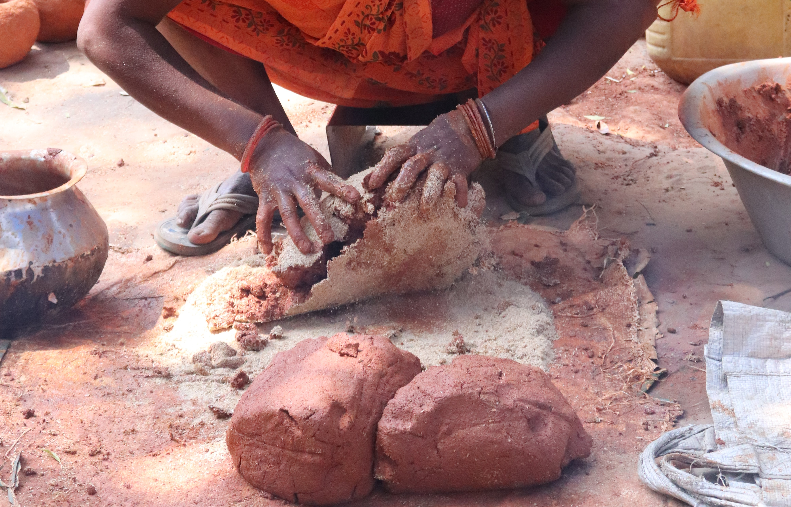
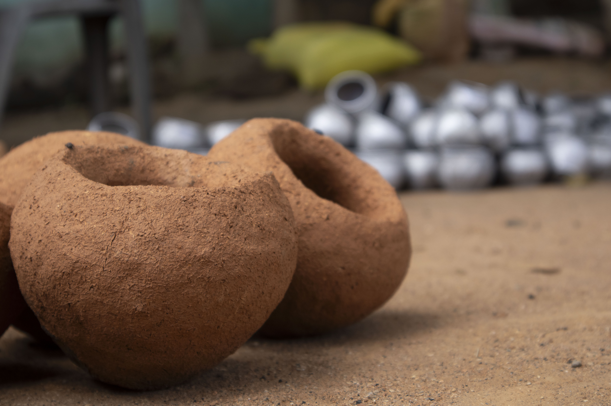
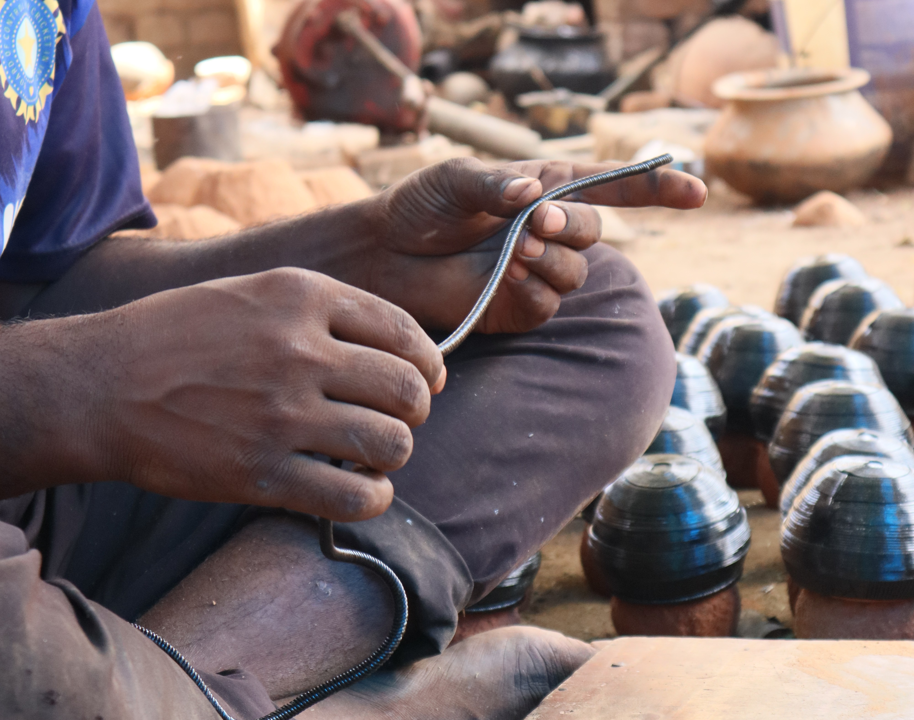
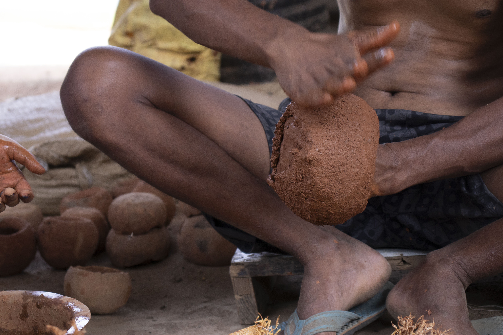
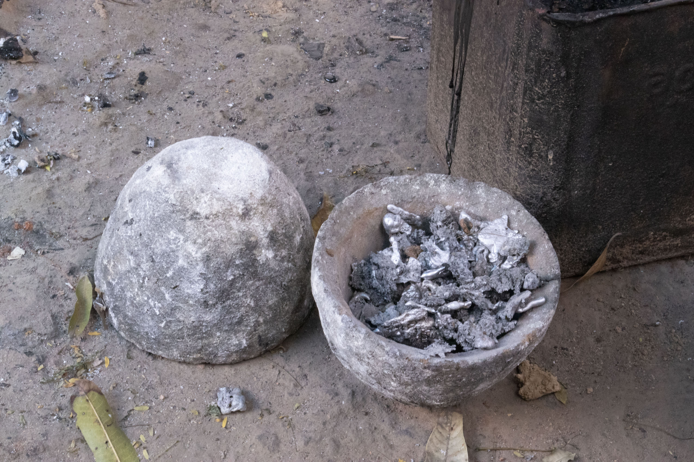
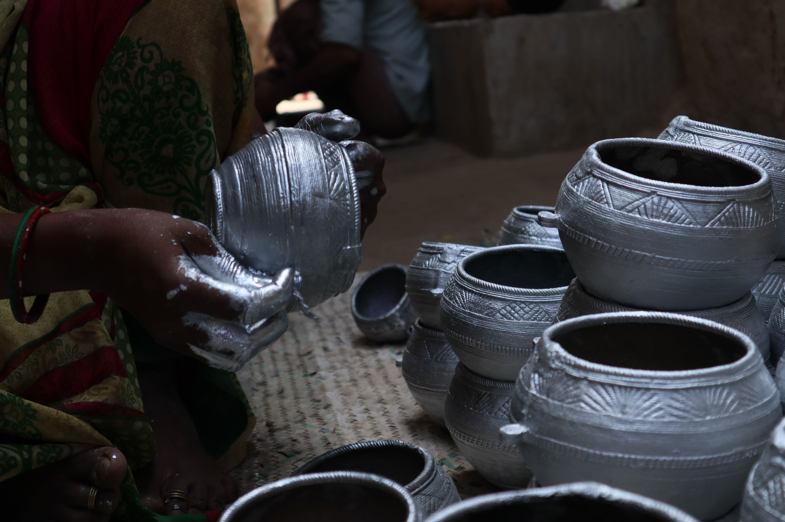
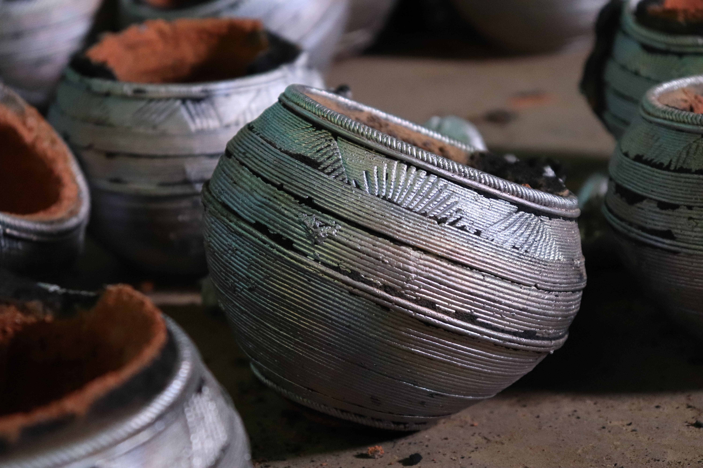

Twelve Steps of
Articulated Craft
Our journey from the raw minerals of the earth to the finished object is a deliberate, multi-stage dialogue with materiality and time.
Step 01: Sourcing the Clay
We begin where the Earth offers its finest sediment. Our clay is harvested from riverbeds known for high mineral content and unique elasticity, providing the perfect foundation for form.


Step 02: The Wedging
Preparation is everything. We hand-wedge the clay to remove air pockets and ensure a uniform consistency. This physical rhythm aligns the clay's particles before it ever touches the wheel.
Step 03: The Centering
The wheel becomes a stage for balance. Finding the true center requires a meditative focus—a dialogue between the force of the wheel and the steady pressure of the hands.


Step 04: Throwing the Form
Wall by wall, the vessel rises. In this stage, we determine the volume and silhouette, carefully managing the moisture content to prevent the form from collapsing under its own weight.
Step 05: Trimming & Footing
Once the clay has reached "leather-hard" state, we return it to the wheel to carve away excess material, defining the foot and refining the external profile for a lighter feel.


Step 06: Controlled Drying
Time is our most critical tool. We slow-dry the vessels in a humidity-controlled environment to prevent warping and cracking as the water naturally evaporates from the form.
Step 07: The First Fire
The bisque firing permanently changes the clay's molecular structure. It becomes porous stone, ready to receive the glaze while retaining its structural integrity.


Step 08: Glaze Application
Glazes are mixed from mineral oxides and wood ash. We apply them through dipping, pouring, or brushing, creating a layer that will vitrify into a glass-like finish.
Step 09: Kiln Loading
Positioning matters. Pieces are placed to maximize heat circulation and allow the fire to 'paint' the surfaces during the long wood-fired cycle.


Step 10: The Trial of Fire
For three days, the kiln is fed by hand. Reaching 2,300°F, the wood ash interacts with the clay, creating spontaneous glazes that are impossible to duplicate.
Step 11: The Unloading
As the kiln cools, the reveal begins. Each piece emerges with its own unique story, marked by the path of the flame and the deposit of the ash.


Step 12: The Final Polish
The final signature. Each piece is hand-burnished with smooth river stones to create a subtle sheen and tactile smoothness that celebrates the raw material's journey.